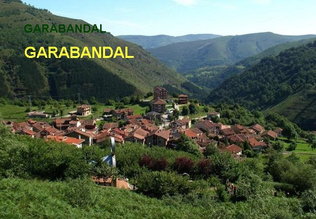
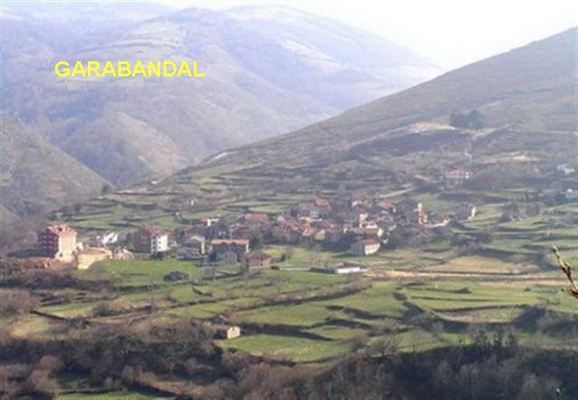
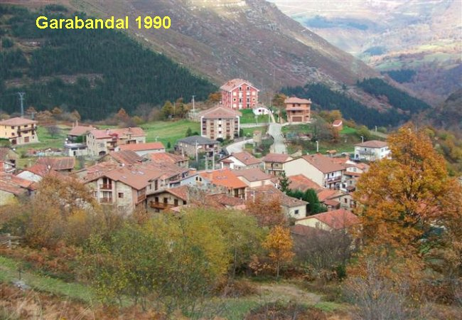
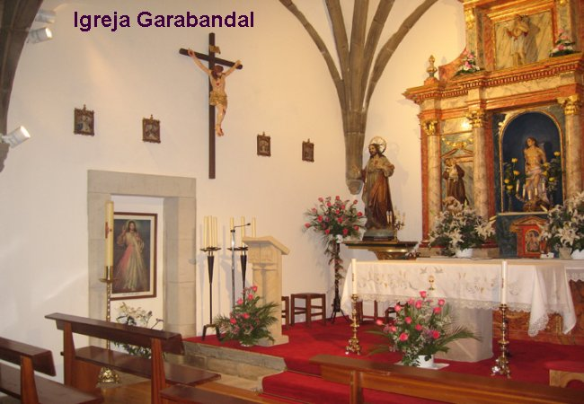
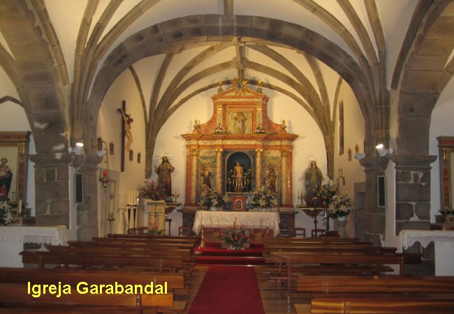

PRELÚDIO
“San Sebastián de Garabandal”, era uma pequena aldeia, situada numa encosta da Cordilheira Cantábrica. Na época em que começaram as Manifestações Sobrenaturais, em 1961, tinha aproximadamente trezentos moradores, que ocupavam cerca de 80 casas de alvenaria. Havia duas Escolas, uma para os meninos e outra para as meninas, que lhes ensinava as noções rudimentares, suficientes para uma existência no campo, como estavam habituados a viver. Os meninos geralmente trabalhavam no pastoreio de animais, na agricultura ou nas minas de carvão. As meninas acima de 12 anos, terminado o ano escolar, conduziam os burros com palhas, adubos e cultivos, e também, cada dia, subiam as altas montanhas, num caminho difícil e penoso, para levar comida aos pais e irmãos que trabalhavam na lavoura.
Garabandal estava quase que completamente isolada do mundo, pois só tinha uma estrada estreita, muito ruim, pedregosa e cheia de curvas que a ligava a Cosío, distante 5 quilômetros. Está situada ao Norte da Espanha, a 600 metros de altura em relação ao nível do mar, e aproximadamente a 55 quilômetros de Santander, cidade banhada pelo mar cantábrico. Desse modo, o povo tinha uma vida pobre e austera, muito marcada pelas estações do ano, tendo os meses, respectivamente de verão e inverno, com bastante sol e muita neve.
As casas não tinham água corrente e a calefação, só era providenciada nos invernos bem fortes, quando utilizavam a estufa. Não havia supermercados, cinema, televisão, telefone e automóvel. Não existia no povoado um único motor. A eletricidade só chegava por poucas horas no período da noite. Todos os alimentos, inclusive o pão, vinham de Cosío, em lombo de mula.
Todavia, apesar de ser um povo pobre, sua religiosidade era notável. A maioria das pessoas cultivava uma fé sincera e perseverante. Todos os dias ao anoitecer, uma senhora percorria as estreitas ruas do povoado, acionando um sino, recordando a todos o dever de rezar pelos mortos. Logo depois, as mulheres vestidas de preto e com um pano amarrado a cabeça, corriam a Igreja para rezar o Terço e as Ladainhas a NOSSA SENHORA.
No meio de toda esta simplicidade surgiu uma história admirável e impressionante, de origem sobrenatural, vinda essencialmente pela Vontade e o Poder de DEUS. E assim sendo, com o melhor sentimento de retribuição a infinita bondade Divina, em querer se manifestar visivelmente a humanidade neste pequeno lugarejo, para nos proporcionar a felicidade da harmonia vivencial e a alegria da salvação eterna, o APOSTOLADO DOS SAGRADOS CORAÇÕES com prazer e alegria, quer reconstituir aqui, em benefício de todos, aqueles amorosos fatos que levaram o Papa Paulo VI a exclamar: “Depois do Nascimento de JESUS, Garabandal, é a mais bela história da humanidade”.
Todos os fatos aqui descritos, foram extraídos do “Diário Pessoal” da vidente Maria Concepción González, que tem o apelido de Conchita e, na época, contava com apenas 12 anos de idade.




